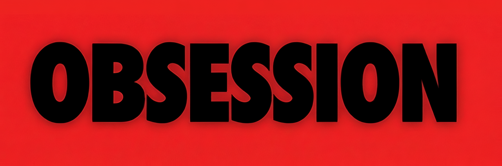

Valeria,
No sé muy bien cómo empezar esta carta, pero creo que lo mejor es simplemente decirte todo lo que siento, sin darle demasiadas vueltas. Hay muchas cosas que durante este tiempo no he sabido explicarte bien, y quería que pudieras leerlas de mí con calma, sin prisas y sin que nada de lo que quiero decir se quede a medias.
Lo primero de todo, quiero agradecerte que te tomes el tiempo de leer esto. Gracias, de verdad.
Quiero que entiendas por qué no pude estar contigo como quizá habría querido. Durante este tiempo yo tampoco estaba bien conmigo mismo, como ya sabías. Tenía muchas cosas en la cabeza y algunas situaciones personales me estaban afectando bastante, y todo eso hizo que muchas veces no supiera ni yo mismo qué quería o cómo afrontar lo que estaba sintiendo.
Antes no podía confirmarlo ni saber qué iba a pasar, pero ahora ya puedo decírtelo: me van a operar este mes. Es algo que llevo arrastrando desde mayo y que prácticamente nadie sabe. Bueno, ni siquiera yo sabía que iba a pasar. Y esa incertidumbre también me hacía estar bastante perdido.
Por eso sentía que no podía comprometerme con nadie sin poder estar al cien por cien para esa persona, en este caso, contigo.
Eso no justifica las cosas que hice mal contigo. Sé que hubo muchas y que tomé decisiones que, viéndolas ahora, habría hecho de otra manera. Lo siento de verdad por todas ellas. Ojalá hubiese sabido gestionar algunas situaciones mejor y, sobre todo, expresarte muchas cosas de otra forma.
No quiero que lo que te estoy contando sirva como una excusa para nada de lo que hice. Simplemente quiero que entiendas desde dónde estaba actuando y por qué muchas veces no supe hacerlo mejor.
Me ha encantado poder involucrarme contigo y, sobre todo, poder conocerte de verdad. Ya nos conocíamos de antes, pero este tiempo me ha permitido conocer una parte de ti que no conocía y descubrir cómo eres de verdad. Y cuanto más te he conocido, más me he dado cuenta de lo importante que eres para mí.

un recuerdo que guardo
Y si tengo que quedarme con un momento por encima de todos, es con aquel día del cine viendo Obsession. Ese día me sentí muy a gusto contigo, de una forma que hacía mucho que no sentía con nadie.
Estar contigo allí, simplemente compartiendo ese rato, me hizo sentir una tranquilidad y una felicidad que hacía mucho que no sentía. Y después, en la vuelta en Uber, contigo dormida encima de mí, no sé por qué, pero para mí fue un momento mágico. Es una de esas pequeñas cosas que quizá para ti no significaron tanto, pero que yo voy a llevar siempre conmigo.
Y ahora que lo pienso, hasta me hace gracia que la película se llamara Obsession, porque creo que refleja bastante bien cómo me siento ahora mismo contigo. Supongo que nunca imaginé que acabaría entendiendo tanto el significado de esa película.
Y también me queda la espina de no haberte cocinado nunca nada. Era algo que quería hacer contigo, algo tan simple como preparar algo para ti y compartirlo juntos, pero al final nunca llegué a hacerlo. Puede parecer una tontería, pero es una de esas pequeñas cosas que me habría gustado vivir contigo.
Sé que ya estás con otra persona y, aunque para mí es difícil verte con alguien más porque me he dado cuenta de lo que he perdido, entiendo tu decisión y la respeto completamente. No voy a mentirte, me duele y seguramente me seguirá doliendo durante un tiempo, pero por encima de todo quiero que seas feliz, aunque esa felicidad ya no sea conmigo.
De verdad espero que te vaya genial y que todo te salga bien. Te lo digo desde el cariño y sin esperar nada a cambio.
Quiero que sepas que te quiero muchísimo. Sé que probablemente no me creas, y lo entiendo. Después de cómo he hecho algunas cosas, puedo entender perfectamente que pienses que lo que sentía por ti no era tan real como te decía. Pero lo era, y lo sigue siendo. Aunque muchas veces no haya sabido demostrarlo como debería.
Y, sobre todo, sé que lo que sentía es real cuando me doy cuenta de que no como ni duermo por todo esto jajaja. Aunque la verdad es que ni puta gracia.
No escribo esto esperando una contestación, ni que cambies de opinión, ni para ponerte ninguna presión. Simplemente necesitaba ser sincero contigo al 100% y decirte todo lo que llevo dentro. No quería volver a quedarme en ese 95% en el que tantas veces me he quedado por miedo, orgullo o simplemente por no saber cómo decir las cosas.
Quería que supieras realmente lo que siento, lo importante que eres para mí y todo aquello de lo que me arrepiento.
También quiero contarte algo que he decidido hacer de aquí en adelante. Este tiempo, y también todo lo que he vivido contigo, me ha hecho darme cuenta de muchas cosas sobre mí y del hombre que quiero llegar a ser. Creo que por primera vez tengo bastante claro por dónde quiero empezar.
Lo primero es operarme, recuperarme bien y dejar atrás algo que llevo arrastrando desde hace meses. Mientras me recupero quiero aprovechar para sacarme el carnet de coche. Y no es solo por tener el carnet, sino porque así podré conducir el coche de mi abuelo. El día antes de irse me dijo que me sacara el carnet, que ese coche era para mí, y quiero cumplir esa promesa. Así que mira qué aura voy a llevar con este coche.
También quiero buscar un trabajo mejor, dar un salto en mi carrera y empezar a construir algo de lo que pueda sentirme orgulloso. Y de cara a 2027 me he propuesto ponerme realmente en forma, definir, entrar en natación y tratar de competir, aunque sea a nivel local en Madrid.
Pero no quiero que todo se quede solo en conseguir cosas. También quiero cambiar la forma en la que vivo. Quiero abrirme más a la gente, ser más sociable, estar más dispuesto a hacer planes, conocer personas nuevas y dejar de cerrarme tanto a ciertas experiencias por miedo o por comodidad.
Quiero centrarme muchísimo en mí mismo, en crecer y en convertirme en el hombre que quiero ser. Lo voy a hacer por mí, porque sé que lo necesito, pero también lo voy a hacer por ti y, en cierta manera, gracias a ti. Porque aunque quizá tú no lo sepas, conocerte mejor y todo lo que he vivido contigo me ha hecho ver muchas cosas de mí que antes no quería o no sabía ver.
Y aunque nuestros caminos se separen, quiero que sepas que puedes contar conmigo para lo que sea. Si algún día tienes un problema, necesitas ayuda o simplemente estás pasando por un momento malo, voy a estar ahí.
No porque espere nada a cambio, ni porque quiera que esto cambie nada entre nosotros, sino porque me importas y siempre me va a importar que estés bien.
No cambiaría haberte querido,
aunque pudiera cambiar muchas de las cosas que hice mientras lo hacía.
Gracias por todo lo que me has permitido vivir contigo y por haberme dejado conocerte mejor. Gracias por cada momento, por cada conversación y por todo lo que, de una manera u otra, has dejado en mí.
Perdóname por todas las veces en las que no supe hacerlo bien.
Te quiero muchísimo.
Álvarono se si esta bien escrita la carta si soy subnormal o que pero le he puesto cariño asi que mira como bailamos y que te mueras por vieja no por sapa o algo asi